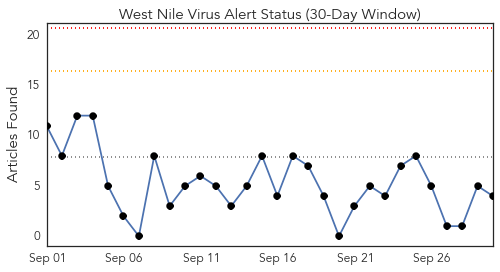
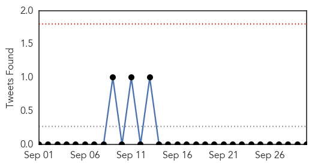
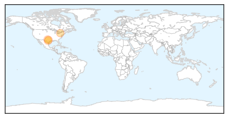
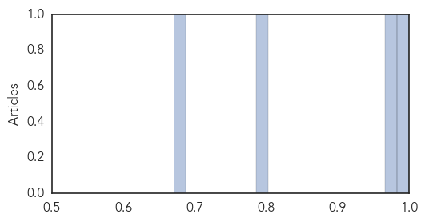

Toggle navigation
Early Warning
Daily Alerts
West Nile Virus
Sep 30, 2015
Compare to:
-
Dengue Fever
Hemmorhagic Fever
Mold/Fungal Infection
Influenza
Meningitis
Pertussis / Whooping Cough
Middle East Respiratory Syndrome
Cholera
Hepatitis
Chikungunya
Yellow Fever
Bubonic Plague
Swine Flu
Ebola
Measles
Unknown
Mumps
30 Day Trends
Web: 0
alerts
, 0
warnings
Twitter: 0
alerts
, 0
warnings
Top Articles:
1.000
West Nile Virus in the US? 5 Things to Know About the Mosquito-Borne Infection
0.980
Positive human case of West Nile Virus discovered near Abilene
0.794
WATCH LIVE: West Nile Virus Press Conference - Story
0.671
New position focuses on watching the community's health
Top Tweets:
No tweets found for Sep 30, 2015
Web/News Articles

Tweets

Article Locations

Article Confidences
